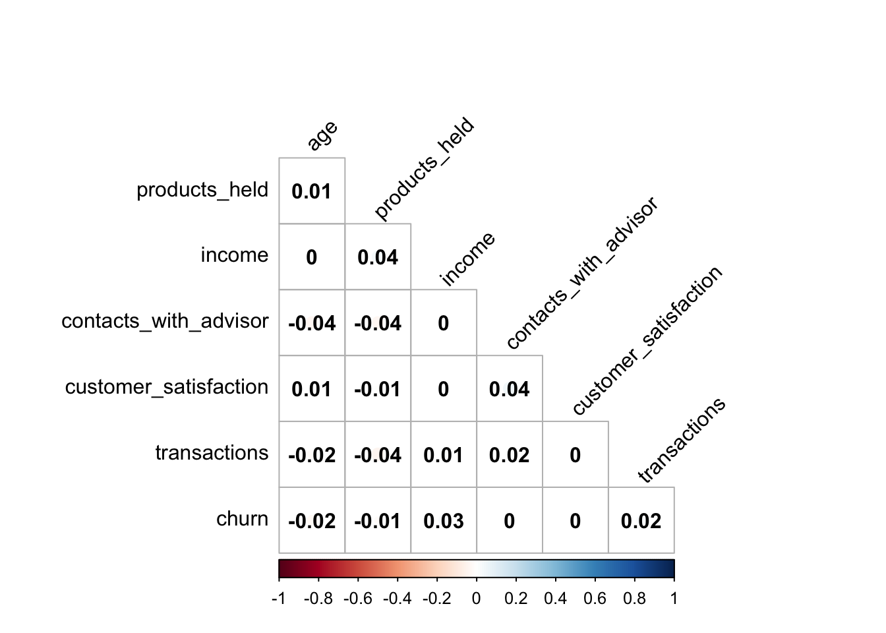
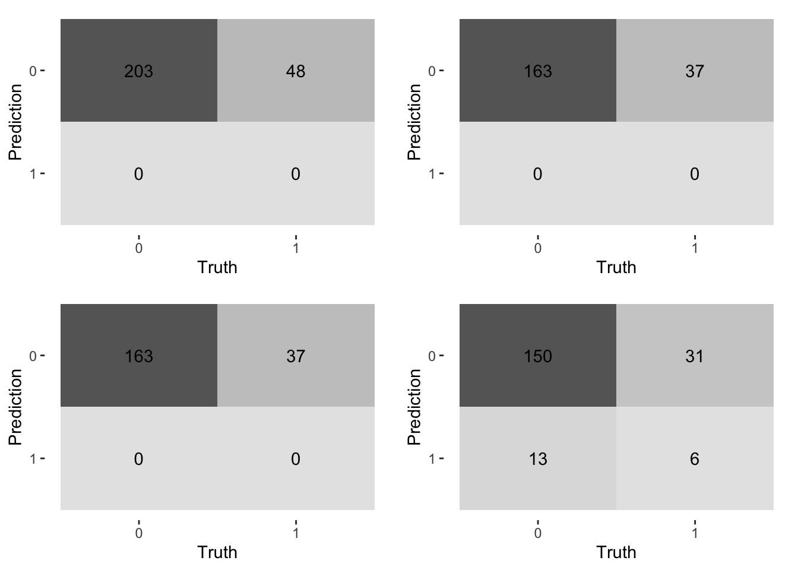
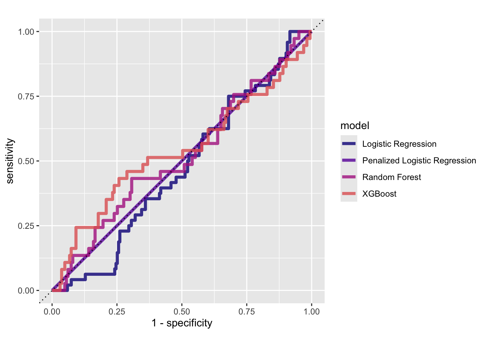
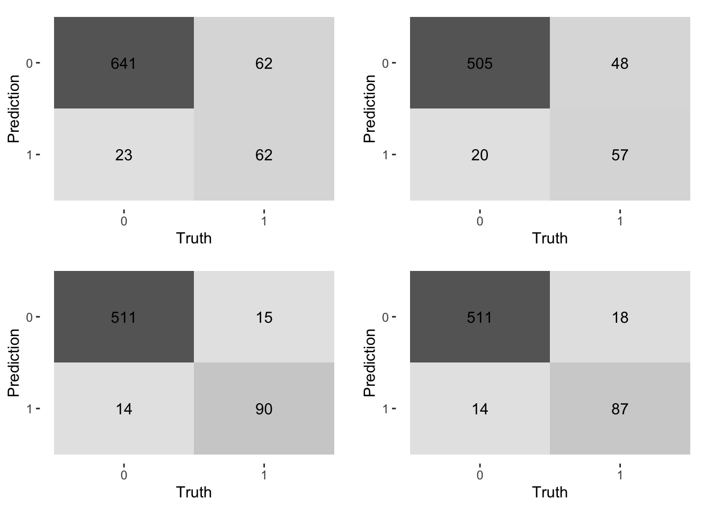
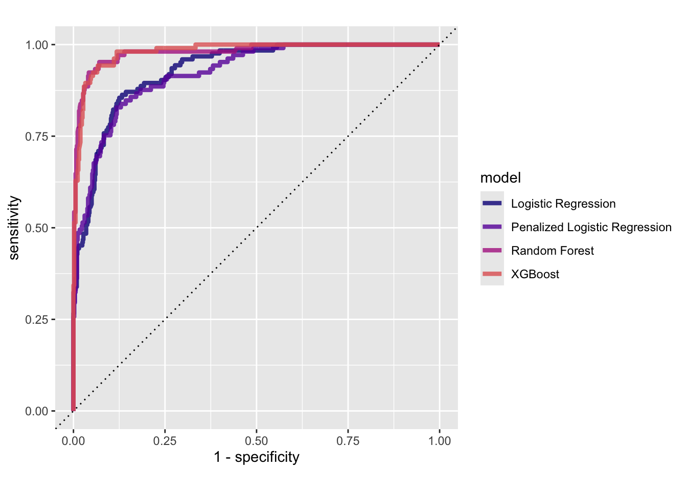

Churn Prediction Analysis
Context of the Analysis
This analysis was conducted as part of an interview process with a private bank based in Geneva. The overarching goal is to design an analytics product that leverages churn prediction and generative AI to help bankers anticipate and address potential client departures.
A key initial question in this process is: Can we build a predictive model that estimates churn with sufficient accuracy?
The analysis is based on a sample dataset provided by the recruiter. To ensure clarity and keep the focus on key insights, most of the code has been abstracted into functions. However, all code is available in the accompanying GitHub repository https://github.com/principles-analytics/churn_prediction. The relevant scripts are sourced in the code sections below.
Code
source(here::here("env-setup.R"))Important disclaimer
Due to time constraints (my day job), I deliberatly did not spend too much time on fine-tuning the model to achieve the best performance. My goal is rather to present a typical approach to the prediction problem which needs to fit in the overall product delivered in the assigment, which will include serving this model and connecting its results with Generative AI features.
Data Exploration
We load the data set provided by the recruiter, do some simple cleanup after some quality checks.
Code
data <- readr::read_delim(fpath_data, delim = ";", show_col_types = FALSE) |>
janitor::clean_names()The skimr::skim function offers a great way to have a quick snapshot of key data characteristics.
Code
data |> skimr::skim()| Name | data |
| Number of rows | 1000 |
| Number of columns | 8 |
| _______________________ | |
| Column type frequency: | |
| numeric | 8 |
| ________________________ | |
| Group variables | None |
Variable type: numeric
| skim_variable | n_missing | complete_rate | mean | sd | p0 | p25 | p50 | p75 | p100 | hist |
|---|---|---|---|---|---|---|---|---|---|---|
| client_id | 0 | 1 | 500.50 | 288.82 | 1 | 250.75 | 500.5 | 750.25 | 1000 | ▇▇▇▇▇ |
| transactions | 0 | 1 | 49.56 | 29.29 | 1 | 24.00 | 50.0 | 75.00 | 99 | ▇▇▇▇▇ |
| contacts_with_advisor | 0 | 1 | 9.35 | 5.77 | 0 | 4.00 | 9.0 | 14.00 | 19 | ▇▇▇▇▇ |
| customer_satisfaction | 0 | 1 | 3.05 | 1.42 | 1 | 2.00 | 3.0 | 4.00 | 5 | ▇▇▆▇▇ |
| products_held | 0 | 1 | 4.95 | 2.61 | 1 | 3.00 | 5.0 | 7.00 | 9 | ▇▇▃▇▇ |
| age | 0 | 1 | 49.53 | 18.06 | 18 | 34.00 | 49.0 | 65.00 | 79 | ▇▇▆▇▇ |
| income | 0 | 1 | 115225.31 | 48666.43 | 30287 | 74412.00 | 115922.5 | 157444.50 | 199823 | ▇▇▇▇▇ |
| churn | 0 | 1 | 0.19 | 0.39 | 0 | 0.00 | 0.0 | 0.00 | 1 | ▇▁▁▁▂ |
Upon simple inspection, we can see that the data set is tidy and clean (one event observation per row, no missing values, no outrageaous value distribution). We’ll go ahead and go into analysing the data to get a better sense of predictors’ relationship to the churn outcome. We’ll use the explore_data function that wraps key calculations.
Code
data_explore <- explore_data(data, class_var = "churn", excl_cols = "client_id", sel_cols = colnames(data))
kableExtra::kable(data_explore$class_prop)| churn | n | prop |
|---|---|---|
| 0 | 810 | 0.81 |
| 1 | 190 | 0.19 |
We notice in the table below that the sample is quiet small with a significant imbalance in the outcome (810, 190 churn events). This is not a rare situation but given the small sample size, it does mean we might be limited in our predicting power and the type of modeling techniques we can allow ourselves to use.
Code
data_explore$corr_matrix |>
corrplot::corrplot(
type = 'lower',
order = 'hclust',
tl.col = 'black',
cl.ratio = 0.2,
tl.srt = 45,
addCoef.col = 'black',
diag = FALSE
)
A more surprising result is shown in @fig_corr_matrix where the correlation matrix reveals no co-linearity between any variables. Although you wouldn’t necessarly expect a visually clear correlation with the churn, we would expect that the number of products_held is correlated to the number of transactions. This result is also clear from looking at a few scatter plots of variables.
Code
p1 <- build_scatter_plot(data |>
dplyr::mutate(
churn = as.factor(churn)),
"churn", "transactions", "products_held", legend = FALSE)
p2 <- build_scatter_plot(data |>
dplyr::mutate(
churn = as.factor(churn)),
"churn", "contacts_with_advisor", "products_held")
p3 <- build_scatter_plot(data |>
dplyr::mutate(
churn = as.factor(churn)),
"churn", "age", "income", legend = FALSE)
p4 <- build_scatter_plot(data |>
dplyr::mutate(
churn = as.factor(churn)),
"churn", "contacts_with_advisor", "customer_satisfaction")
gridExtra::grid.arrange(p1, p2, p3, p4, ncol = 2, nrow = 2)
Other variables show the same characteristics. Although we could still imagine complex non-linear relationships between the predictors and the outcome, these observations tend to indicate the sample was not generated based on real-life variable distributions. The biggest risk is that any effort to train a model to predict churn based on this training data will be vain.
For now, we will go ahead and set the churn variable as a factor variable for the rest of the analysis, since this is the categorical outcome to predict. For convenience, we will also remove the client_id variable which contains no predictive power (note that we might re-introduce this variable for easier interpretation of specific features in the results).
Code
data <- data |>
dplyr::mutate(churn = as.factor(churn)) |>
dplyr::select(-client_id)Predictive modelling
We are faced with a fairly standard binary classification problem. Given some of the limitations previously discussed, and given the small sample size, it would appear not necessary to go into too much complexity for the modeling part. However, our goal is also to show possible approaches if we were to be in a real world scenario.
As such, we’ve decided to test 4 different models:
- A logistic regression
- A penalised logistic regression
- A random forest
- An XGBoost model
All these models are good candidates for such problems. When yielding the same results and similar performance, the logistic regression would typically be favored due to easier interpretation of the results.
We source the relevant scripts in the code below. The script provides convenience functions that wrap different steps of the modeling process: model building (we use the tidymodel interface), model training, model hyperparameter tuning, model validation and performance assessments.
For each model, we split the data in a training set (60% of the initial sample), a validation set used to tune model hyper-parameters when they exist (20%) and a test set (20%). For the hypeparameter tuningphase, we provide a grid of values to test but we admiditly did not spend too much time on studying the tuning results.
The below table below displays a few performance results for the 4 models trained. Although the accuracy figure seems high, our ability to predit churn events is actually null (the sensitivity is zero accross all models). This comes back to our initial intuition that the sample provided does not reflect real world data and will fail to inform any prediction power given how the data was generated. Only the XGBoost approach presents a marginal performance in predicting churn events.
Code
lr_auc <- run_logistic_regression(data)
lrp_auc <- run_penalised_logistic_regression(data)
rf_auc <- run_random_forest(data)
bdt_auc <- run_xgboost(data)
performance_results <- dplyr::bind_rows(
lr_auc$perf_metrics,
lrp_auc$perf_metrics,
rf_auc$perf_metrics,
bdt_auc$perf_metrics
) |>
dplyr::mutate(.estimate = round(.estimate * 100, 2)) |>
dplyr::select(
`Model` = "model",
`Performance Metric` = ".metric",
`Estimated Performance` = ".estimate"
)
kableExtra::kable(performance_results, align = 'llc')| Model | Performance Metric | Estimated Performance |
|---|---|---|
| Logistic Regression | accuracy | 80.88 |
| Logistic Regression | kap | 0.00 |
| Logistic Regression | sens | 0.00 |
| Logistic Regression | spec | 100.00 |
| Penalized Logistic Regression | accuracy | 81.50 |
| Penalized Logistic Regression | kap | 0.00 |
| Penalized Logistic Regression | sens | 0.00 |
| Penalized Logistic Regression | spec | 100.00 |
| Random Forest | accuracy | 81.50 |
| Random Forest | kap | 0.00 |
| Random Forest | sens | 0.00 |
| Random Forest | spec | 100.00 |
| XGBoost | accuracy | 78.00 |
| XGBoost | kap | 10.15 |
| XGBoost | sens | 16.22 |
| XGBoost | spec | 92.02 |
Code
# kableExtra::kable(lgr$class_prop)
# lgr$roc_curve_plotBelow, we also present the confusion matrices for the various models, which communicate the same information we already discussed, as well as the Receiver Operating Characteristic curves (RoC) which clearly show the curves follow a diagonal path, indicating no prediction power.
Code
c1 <- lr_auc$conf_matrix |> autoplot(cm, type = "heatmap")
c2 <- lrp_auc$conf_matrix |> autoplot(cm, type = "heatmap")
c3 <- rf_auc$conf_matrix |> autoplot(cm, type = "heatmap")
c4 <- bdt_auc$conf_matrix |> autoplot(cm, type = "heatmap")
gridExtra::grid.arrange(c1, c2, c3, c4, ncol = 2, nrow = 2)
Code
bind_rows(lr_auc$roc_curve, lrp_auc$roc_curve, rf_auc$roc_curve, bdt_auc$roc_curve) |>
ggplot(aes(x = 1 - specificity, y = sensitivity, col = model)) +
geom_path(lwd = 1.5, alpha = 0.8) +
geom_abline(lty = 3) +
coord_equal() +
scale_color_viridis_d(option = "plasma", end = .6)
Looking at a more optimistic example
To make sure our modeling implementations are not the issue behind the above results, we used a churn data sample used in Kaggle competition. The sample represents churn data for an Iranian Telecommunications company. The data set can be found in the GitHub repository and at the following URL.
Code
data_telecom <- readr::read_csv(here::here("data/iranian_customer_churn.csv"), show_col_types = FALSE) |>
janitor::clean_names() |>
dplyr::mutate(churn = as.factor(churn))We’ll skip the data exploration and cleaning phase to simply show the results of applying our 4 classification models. Although the classification performance can probably be improved with some further tests and fine-tuning, the results are already extremely good out of the box. RoC curves indicate a much better performance achieved with the Random Forest and XGBoost approach.
Code
tel_lr_auc <- run_logistic_regression(data_telecom)
tel_lrp_auc <- run_penalised_logistic_regression(data_telecom)
tel_rf_auc <- run_random_forest(data_telecom)
tel_bdt_auc <- run_xgboost(data_telecom)
performance_results <- dplyr::bind_rows(
tel_lr_auc$perf_metrics,
tel_lrp_auc$perf_metrics,
tel_rf_auc$perf_metrics,
tel_bdt_auc$perf_metrics
) |>
dplyr::mutate(.estimate = round(.estimate * 100, 2)) |>
dplyr::select(
`Model` = "model",
`Performance Metric` = ".metric",
`Estimated Performance` = ".estimate"
)
kableExtra::kable(performance_results, align = 'llc')| Model | Performance Metric | Estimated Performance |
|---|---|---|
| Logistic Regression | accuracy | 89.21 |
| Logistic Regression | kap | 53.36 |
| Logistic Regression | sens | 50.00 |
| Logistic Regression | spec | 96.54 |
| Penalized Logistic Regression | accuracy | 89.21 |
| Penalized Logistic Regression | kap | 56.50 |
| Penalized Logistic Regression | sens | 54.29 |
| Penalized Logistic Regression | spec | 96.19 |
| Random Forest | accuracy | 95.40 |
| Random Forest | kap | 83.37 |
| Random Forest | sens | 85.71 |
| Random Forest | spec | 97.33 |
| XGBoost | accuracy | 94.92 |
| XGBoost | kap | 81.43 |
| XGBoost | sens | 82.86 |
| XGBoost | spec | 97.33 |
Code
tel_c1 <- tel_lr_auc$conf_matrix |> autoplot(cm, type = "heatmap")
tel_c2 <- tel_lrp_auc$conf_matrix |> autoplot(cm, type = "heatmap")
tel_c3 <- tel_rf_auc$conf_matrix |> autoplot(cm, type = "heatmap")
tel_c4 <- tel_bdt_auc$conf_matrix |> autoplot(cm, type = "heatmap")
gridExtra::grid.arrange(tel_c1, tel_c2, tel_c3, tel_c4, ncol = 2, nrow = 2)
Code
bind_rows(tel_lr_auc$roc_curve, tel_lrp_auc$roc_curve, tel_rf_auc$roc_curve, tel_bdt_auc$roc_curve) |>
ggplot(aes(x = 1 - specificity, y = sensitivity, col = model)) +
geom_path(lwd = 1.5, alpha = 0.8) +
geom_abline(lty = 3) +
coord_equal() +
scale_color_viridis_d(option = "plasma", end = .6)
Important Considerations
Cost of Prediction Errors
We often focus on overall accuracy or sensitivity when evaluating prediction models. However, in churn prediction, the costs of false positives (predicting a client will churn when they won’t) and false negatives (failing to identify a client who actually churns) can vary significantly depending on the industry.
In private banking, the cost of losing a client is typically much higher than the cost of providing extra attention to a client who had no intention of leaving. This contrasts with industries like travel booking—take Expedia, for instance—where falsely blocking a legitimate transaction due to suspected fraud can severely damage the customer experience and business.
In our context, this means that minimizing false negatives—i.e., ensuring we don’t miss clients who are likely to churn—is particularly important and should be a key focus of our modeling efforts.
General Real World Constraints
The private banking industry is a sensitive and highly regulated industry. This can have several impacts:
- From a regulatory standpoint, our ability to use all the data relevant to a churn prediction is not guaranteed
- AI and Generative AI solutions are receving dedicated attention from a regulatory perspective (FINMA, Swiss Tripartite platform, European AI act), and we should always stay informed
- Even with good prediction accuracy, it is essential essential that we can present more than a class prediction and its probability to the banker
The first point should be mitigated by the existance of strong governance practices which clarify policies around data usage.
Regarding the last point, we have a few strategies in mind. In order to emphasize model interpretability to the end user (the banker notified of churn likelihood), the goal is essentially to highlight which predictors (features) contribute the most to a given prediction and translate these contributions into natural language.
The models we suggest using offer fairly good interpretability. For logistic regressions, we can directly use the sign and magnitude of the prediction coefficients to signal the most influential features. For the decision tree-based models, we can use SHAP values (SHapley Additive exPlanations) which offer visually intuitive characterisations of feature contributions.
We would map top-contributing features to “text codes” that explicit the reason for flagging a churn probability. If a feature crosses a threshold or is top-ranked for a client, attach its mapped reason. For example: Flagged due to recent drop in assets under management and lack of contact in last 90 days.